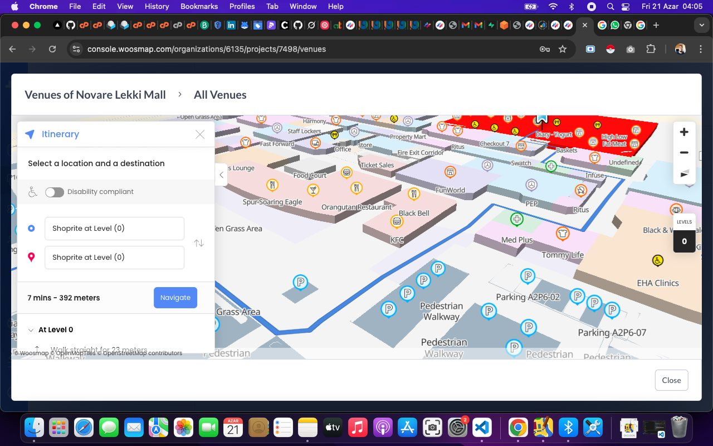

Geospatial engineering & digital infrastructure
Intelligent spatial systems for the built environment.
We design and deliver geospatial platforms, digital twins and accessible navigation systems that make buildings and infrastructure more understandable, connected and operationally useful.

The problem
Buildings hold more information than their operators can use.
Most large facilities run on disconnected drawings, spreadsheets, signs and local knowledge. The data exists, but it is not structured, not connected and not usable at the moment a decision has to be made.
Waide works on that gap. We turn building layouts, asset lists and spatial records into structured geospatial systems: maps that route people, models that describe spaces, and interfaces that show an operator what is happening on the floor.
Disconnected spatial data
Plans in CAD, tenant lists in spreadsheets, asset records in another system. None of them share a coordinate system or a definition.
Navigation that stops at the door
Street maps do not know about units, levels, lifts or a corridor that closes on Mondays. Visitors ask staff instead.
Low visibility of physical assets
Operators can see a sales total, but not how people moved through the building to produce it.
Accessibility added late
Step-free routes and screen-reader support are treated as an upgrade, after the map and the interface are already fixed.
Capabilities
Five areas of work, one spatial discipline.
Each division can be commissioned on its own. Most projects combine two or three.
Geospatial engineering & mapping
GIS mapping, indoor and outdoor data collection, CAD-to-GIS conversion, georeferencing, feature extraction, route networks and spatial databases.
Digital twins & built-asset information
Multi-floor digital twins, building layout digitisation, space and asset inventories, indoor spatial models and facility information workflows.
GIS platforms & geospatial software
Web GIS applications, mobile mapping interfaces, spatial APIs, PostGIS architecture, dashboards and role-based access.
Accessible mobility & wayfinding
Indoor navigation, step-free routes, accessible point-of-interest data, audio guidance and screen-reader-compatible interfaces.
Technical advisory & capacity building
Requirements analysis, GIS implementation advisory, data-management frameworks, quality assurance, training and documentation.
Featured project Lekki, Lagos
Indoor spatial mapping
& digital twin development.
Follow the Novare mapping story from satellite imagery and site context through parking and indoor features, pedestrian connections, route testing and the visitor map. Every slide uses a supplied project capture.
Delivery
A defined process, not an open-ended engagement.
Every assignment follows the same five stages. Each stage has a named output that you can review before the next one starts.
-
Discover and assess
Define the decision the system has to support, then audit the plans, lists and records that already exist.
OutputScope note and data-gap register -
Collect and structure spatial data
Georeference drawings, digitise units and routes, and build the attribute schema behind them.
OutputValidated spatial dataset -
Engineer and integrate
Build the data model, routing network, interfaces and any integrations the scope calls for.
OutputWorking system in a test environment -
Validate and deploy
Walk the routes, test the interface, check accessibility behaviour and accept the system against the scope.
OutputQA record and deployment sign-off -
Train, document and support
Hand over the documentation, train the team that will run the system and agree the support arrangement.
OutputManuals, training record and support plan
Inclusive infrastructure
Accessibility is part of the spatial model, not a later patch.
A route that works for a wheelchair user usually works better for everyone: a parent with a pushchair, a visitor with luggage, a delivery trolley. We map step-free paths as a separate network rather than an afterthought.
- Step-free routes built from lifts, ramps and level access, checked on site.
- Screen-reader-compatible interfaces and audio guidance in scope where required.
- Accessible point-of-interest data: entrances, toilets, service desks and assistance points.
- Accessibility testing with disabled users where the project allows it.

Insights
Technical notes from current work.
Short, specific write-ups on indoor GIS, digital twins and accessible navigation. No thought-leadership filler.
Indoor GIS
What a usable indoor spatial data model contains
Levels, units, connections and route edges: the four layers a navigation system actually needs.
Read note →
Digitisation
Digitising a mall in JOSM: the unglamorous part of digital twins
How floor plans, imagery and field checks become a clean, routable indoor dataset.
Read note →
Accessibility
What accessible wayfinding requires before the map is drawn
Route classification, assistance points and testing: the decisions that cannot be added at the end.
Read note →
Start a conversation
Have a building, a dataset or a brief that needs structure?
Send the venue type, the country and what you are trying to decide. We will reply with whether we can help, what we would need and what the first stage would deliver.